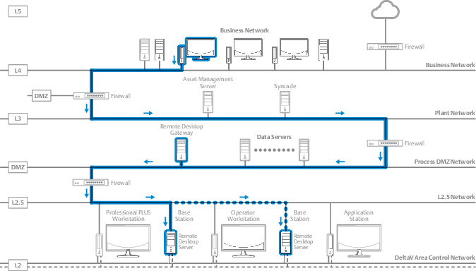

Remote Desktop Gateway for DeltaV systems
Remote Desktop Gateway (RD Gateway) is a role service (part of the Windows Server operating system) that enables authorized remote users running Remote Desktop Connection (RDC) client to connect to computers on a protected network (for example, behind a firewall). For DeltaV systems, the Remote Desktop Gateway provides a secure method for DeltaV Remote Clients to connect to the DeltaV Remote Desktop Server (previously the Terminal Server). Applications run on the target system, not the remote client.
RD Gateway uses the Remote Desktop Protocol (RDP) over HTTPS to establish a secure, encrypted connection between remote users and the computer they to which they are connecting. RD Gateway transmits RDP traffic to port 443 by using an HTTP Secure Sockets Layer/Transport Layer Security (SSL/TLS) tunnel. Because most firewalls have port 443 open (to enable Internet connectivity), RD Gateway can take advantage of this network design to provide remote connections across multiple firewalls.

Subtopics:
- Remote Desktop Gateway system requirements and prerequisites
- Remote Desktop Gateway firewall ports to configure
- Plan your system for using Remote Desktop Gateway with DeltaV
This procedure outlines the steps needed before installing any software. - Configure the Remote Desktop Gateway server
This procedure describes how to configure a computer to be your Remote Desktop Gateway (RD Gateway) server. - Configure the Remote Desktop client
The Remote Desktop client is the computer that will connect to the DeltaV workstation using Remote Desktop Connection by going through the Remote Desktop Gateway. - Connect the Remote Desktop client to DeltaV through a Remote Desktop
Gateway
This procedure describes the settings to select on the Remote Desktop Connection dialog when using a Remote Desktop Gateway.